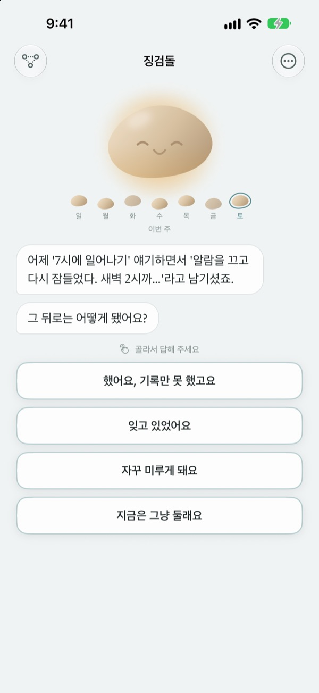
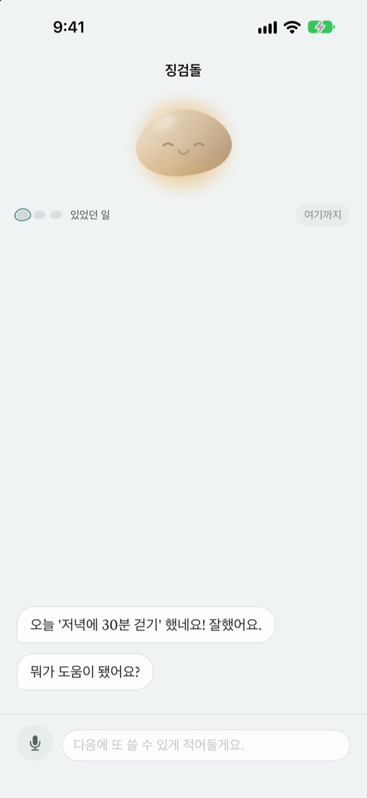
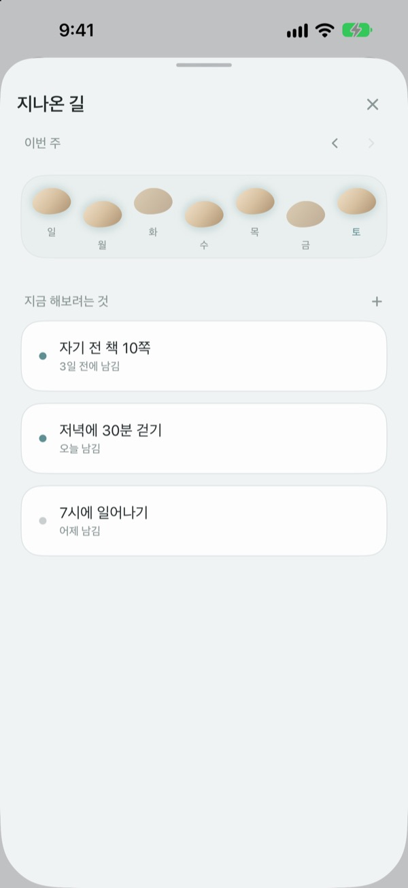
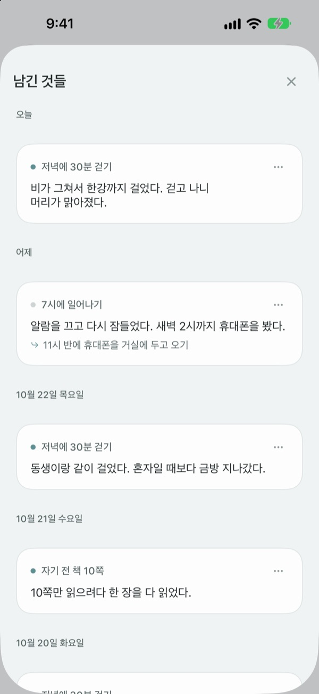

헛디뎠다고
개울에 빠진 건 아니에요
목표를 놓친 날, 조약돌이 먼저 말을 걸어요. 뭘 잘못했는지가 아니라 무슨 일이 있었는지 묻고, 있었던 일과 지금 마음을 나눠서 돌려줘요.
대화, 기록, 지나온 길은 무료예요. 가입도 광고도 없어요.

조약돌과 이야기해 보세요
저녁에 걷기로 해 놓고 못 걸은 날이에요. 답을 고르거나 직접 적으면 조약돌이 앱에서와 똑같이 대답해요.
계획대로 안 된 날, 스스로를 탓하고 있나요?
운동을 빼먹은 밤에 떠오르는 말은 대개 '나는 왜 이 모양일까'예요. 그런데 들여다보면 야근이 있었고, 비가 왔고, 너무 지쳐 있었어요. 징검돌은 그날 있었던 일과 지금 마음을 따로 묻고 둘을 나눠서 보여 줘요. 의지가 약해서가 아니라 사정이 그랬다는 걸 알아채면, 내일 내디딜 작은 걸음이 보여요.
조약돌이 먼저 말을 걸어요
목표를 정해 두면 조약돌이 해낸 날과 막힌 날을 함께 지켜봐요. 놓친 날엔 '왜 안 했어요?' 대신 '무슨 일이 있었어요?'라고 묻고, 지난번에 들려준 얘기를 기억했다가 그 뒤로 어떻게 됐는지 물어요.
적기 힘든 날엔 소리 내어 말해도 돼요. 말은 기기 안에서 알아듣고 녹음은 저장하지 않아요.

지나온 길이 징검돌로 놓여요
한 주가 징검돌 한 줄로 펼쳐져요. 밟지 못한 날의 돌도 지우지 않고 그대로 남겨 둬요.
빠진 날이 있어도 길은 끊기지 않고 이어져 있다는 게 한눈에 보여요.

남긴 이야기를 다시 꺼내 봐요
있었던 일, 그때 마음, 다음에 해볼 것이 날짜순으로 쌓여요. 비슷하게 막혔던 날을 다시 보면 무엇이 통했는지 보여요.
홈 화면 위젯에서 조약돌의 한마디를 보고, 정해 둔 시간에 오늘을 돌아보라는 알림도 받을 수 있어요.

시작은 세 단계면 돼요
- 1
목표를 하나 적어요
'저녁에 30분 걷기'처럼 해보려는 일을 적어요.
- 2
하루를 마치고 앱을 열어요
조약돌이 먼저 오늘 어땠는지 물어요. 알림 시간을 정해 두면 잊지 않아요.
- 3
고르거나 적어서 답해요
언제든
지금은 그냥 둘래요로 멈출 수 있어요.
대화는 이렇게 흘러가요
- 있었던 일
- 무슨 일이 있었는지 사실만 물어요
- 마음
- 지금 기분을 다섯 칸 중에서 골라요
- 돌아보기
- 있었던 일과 지금 마음을 나눠서 되짚어 줘요
- 다음 한 걸음
- 5분이면 되는 작은 일을 직접 정해요
- 마무리
- 마음이 많이 가라앉은 날엔 더 묻지 않고 쉬자고 해요
어느 단계에서든 그만둘 수 있고, 그때까지 말한 것은 남아요.
대화와 기록은 무료, 더 필요하면 프로
무료
- 조약돌과의 대화 전부
- 목표 세 개까지
- 말로 남기기
- 지나온 길과 남긴 이야기
- 홈 화면 위젯과 매일 알림
- 비밀번호 잠금
징검돌 프로
- 목표를 개수 제한 없이
- 조약돌의 결을 여섯 가지 중에서 고르기
- 지나온 기록을 텍스트 파일로 내보내기
한 번 사면 계속 써요. 구독이 아니에요.
대화 한가운데 결제 화면이 끼어들지 않아요. 다른 기기에서 쓰거나 앱을 다시 설치했다면 설정에서 구매 복원을 눌러 주세요.
자주 묻는 질문
놓친 날에 꼭 이유를 적어야 하나요?
아니요. 어느 단계에서든 지금은 그냥 둘래요를 누르면 바로 끝나요. 그때까지 말한 것은 남아서 다음에 이어 볼 수 있어요.
사실은 했는데 앱이 못 했다고 해요.
했는데 기록을 못 했어요를 누르면 조약돌이 순순히 받아들이고, 뭐가 도움이 됐는지 물어요. 통했던 방법은 적어 두었다가 다음에 막힐 때 다시 꺼내 줘요.
말로 남긴 내용은 어디로 가나요?
말은 기기 안에서 글로 바뀌고 녹음은 저장하지 않아요. 지원하는 기기에서는 읽기 편하게 문장을 다듬어 주는데, 이것도 기기 안에서 이뤄져요.
목표는 몇 개까지 둘 수 있나요?
무료로 세 개까지 둘 수 있어요. 끝낸 목표는 지나온 길에서 내려놓기를 하면 자리가 비어요. 더 많이 두려면 징검돌 프로가 필요해요.
징검돌 프로는 구독인가요?
아니요. 한 번 사면 계속 써요. 다른 기기에서 쓰거나 앱을 다시 설치했다면 설정의 구매 복원을 눌러 주세요.
다른 사람이 내 기록을 볼 수 있나요?
가입이 없고 기록은 내 기기와 내 iCloud에만 있어요. 설정에서 비밀번호를 걸어 앱을 잠글 수 있어요. 적은 내용은 개발자에게 보내지 않아요. 앱을 연 날 같은 익명 사용 통계도 설정에서 끌 수 있어요.
알림 시간을 바꾸고 싶어요.
설정의 매일 알림에서 켜고 끄거나 시간을 정할 수 있어요.
조약돌 말투를 바꿀 수 있나요?
설정의 말투에서 존댓말과 반말 중에 고를 수 있어요.
기록을 모두 지우려면요?
설정의 모든 기록 지우기를 누르면 목표와 기록이 모두 사라지고 되돌릴 수 없어요. iCloud로 이어진 다른 기기에서도 지워져요. 설정과 구매는 그대로 남아요. 프로라면 지우기 전에 기록 내보내기로 간직해 둘 수 있어요.
문의는 어디로 하나요?
앱의 설정에서 피드백 보내기를 누르거나 아래 메일로 보내 주세요.
궁금한 점이나 의견은 leeo@kakao.com로 보내 주세요.